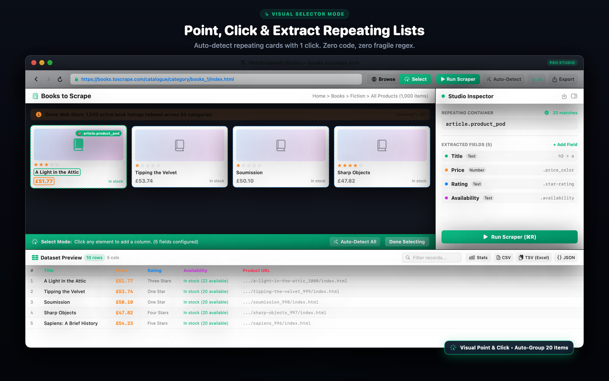
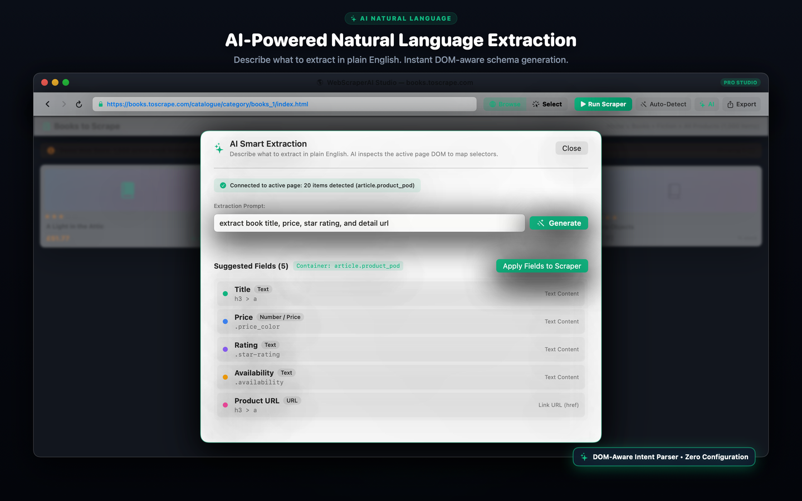
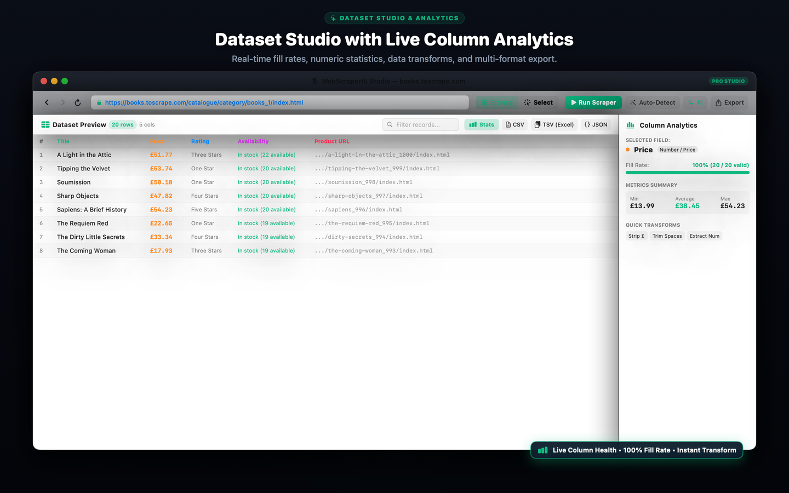
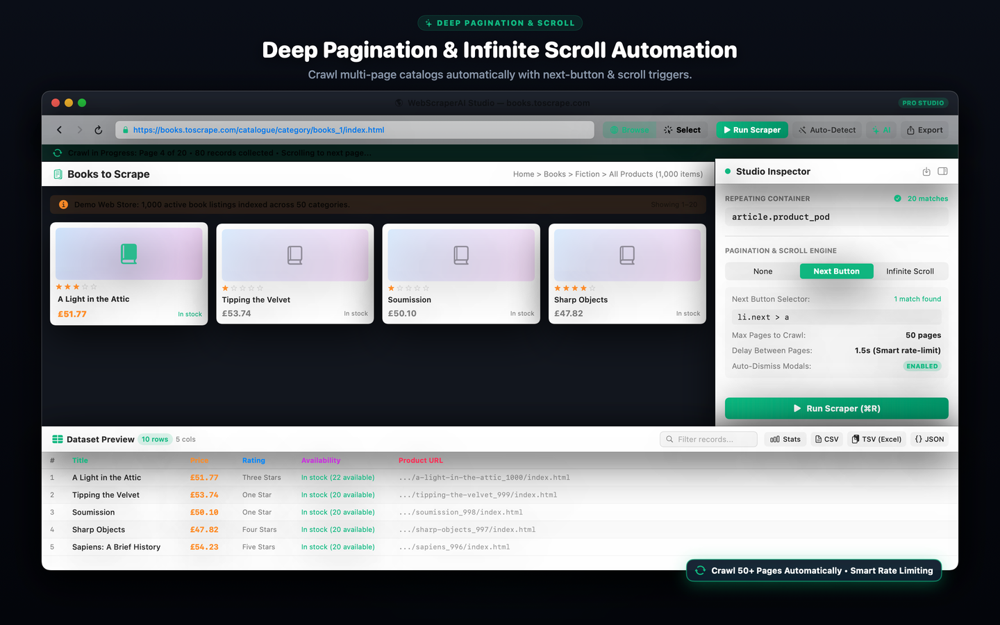
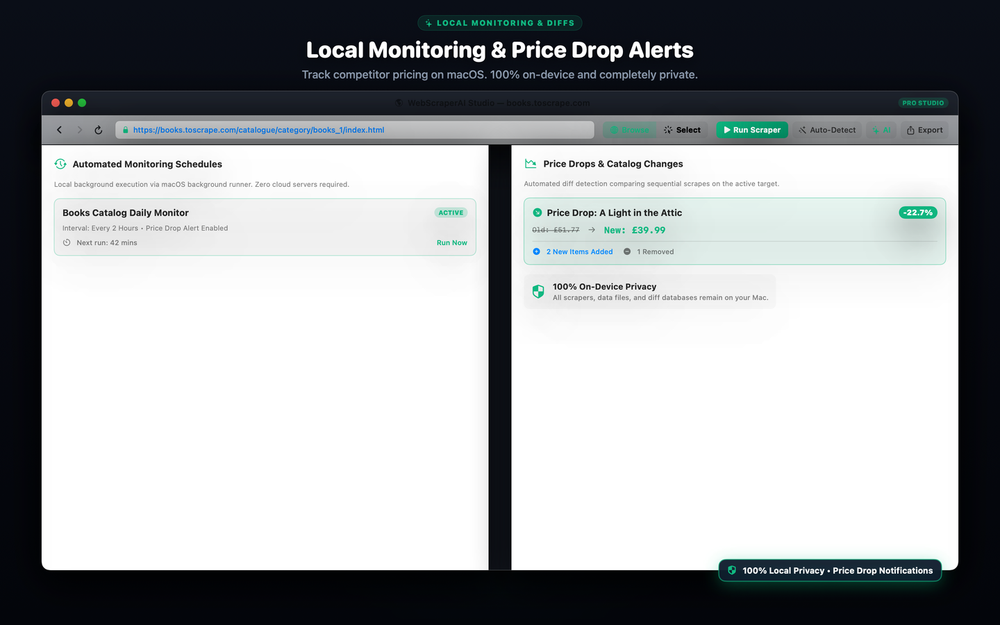

Visual Web Scraping Studio.
Zero Cloud Subscriptions.
Eliminate costly recurring subscriptions ($119–$149/mo). Point, click, or type natural language prompts to scrape structured datasets straight into CSV, TSV, Excel XML, or SQLite with 100% on-device privacy.

Visual Select Mode
Switch between normal browsing and Select Mode. Click any element to add a column; smart DOM clustering auto-detects repeating cards and tables.
Magic Auto-Detect (⌘D)
1-Click page scanner groups recurring item lists, identifies titles, links, prices, and star ratings, and loads a preview table immediately.
Natural Language AI (⌘K)
Describe desired fields in plain English (e.g. "extract title, author, price, and url"). On-device NLP matches live DOM elements with zero cloud latency.
Dataset Studio & Column Analytics
Audit scraped quality before export. View column Fill Rates, unique counters, and instant Min/Average/Max calculations for price and numeric fields.
1-Click Data Cleaning
Transform dirty web data in-place: extract numbers, strip currency symbols ($ € £ ¥), clean whitespace, strip HTML tags, and convert case.
TSV & Multi-Format Exports
Export to CSV, JSON, Excel XML, and embedded SQLite 3. Use 1-Click "Copy TSV" to paste directly into Microsoft Excel or Apple Numbers.
Infinite Scroll & Deep Pagination
Automate multi-page catalogs with next-button navigation or smooth infinite scrolling, featuring auto-dismissal of cookie dialogs and modals.
Price Drops & Catalog Diff Tracking
Schedule automated local background scraping. The built-in Diff Engine tracks price fluctuations and triggers native macOS alerts.
Site Bookmarks & Quick Navigation
1-click star bookmarking directly inside the address bar (⇧⌘D). Organize targets by category, search, and jump into your extraction targets in milliseconds.
Saved Sessions & Project Persistence
Save complete scraping workspaces including target URLs, container selectors, pagination settings, extraction rules, and collected datasets (⌘S / ⌘O).
100% On-Device Privacy
Runs entirely inside the macOS App Sandbox. Zero telemetry, zero analytics, and zero remote proxies. Your credentials and data stay on your Mac.
Designed Exclusively for macOS
Crafted with pure Swift 6 and SwiftUI for Apple Silicon performance, fluid resizing, and native desktop keyboard shortcuts.

AI Natural Language Prompt Generator (⌘K)

Live Dataset Studio with Column Fill Rates & Analytics

Infinite Scroll Engine with Auto Modal Dismissal

Local Background Schedules & Price Drop Diff History
Disrupting Overpriced Cloud Scrapers
Cloud scrapers bill $119 to $149 every month while logging your data on remote servers. WebScraperAI Studio gives you complete desktop power for a single lifetime purchase.
Octoparse / ParseHub Cloud
$1,428+ every year recurring
- Recurring subscription commitments
- Data and credentials sent to 3rd-party servers
- Heavy Electron memory footprint (500MB+)
- Export quotas and usage caps
WebScraperAI Studio Pro
BEST VALUEPay once. Own forever. Zero IAP.
- 100% on-device sandboxed privacy
- Zero subscriptions or recurring fees
- Unlimited extractions & deep pagination
- CSV, TSV, JSON, Excel XML & SQLite exports
- Linked to your Apple Account across Macs